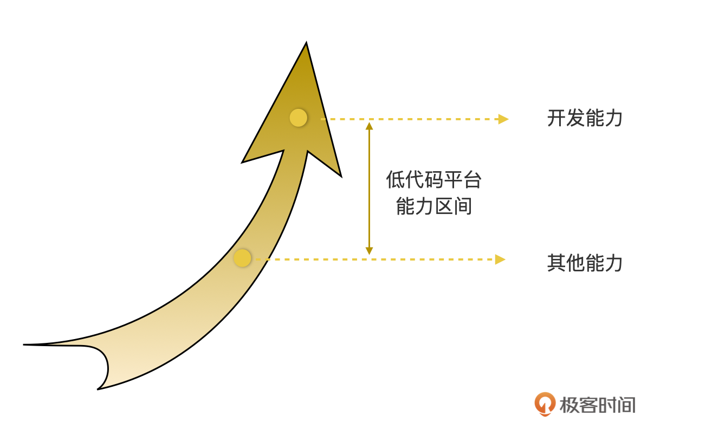
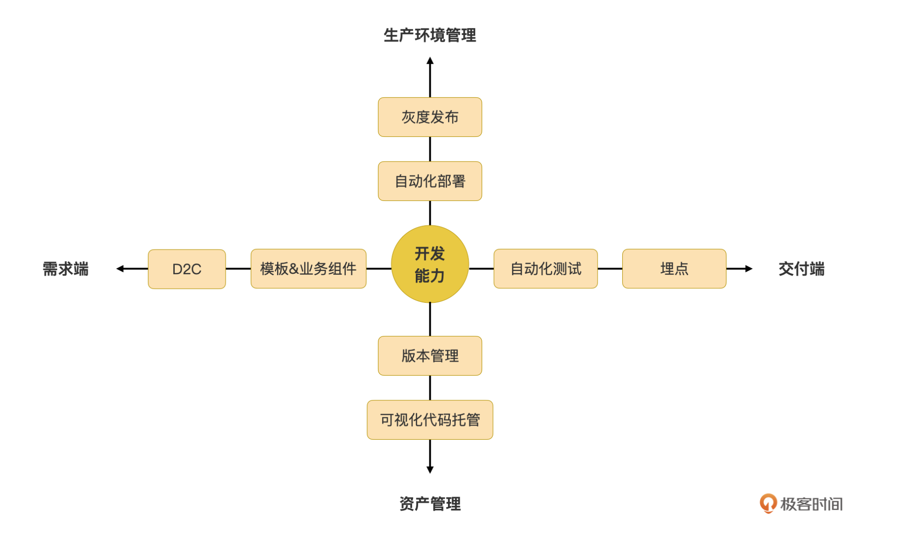

- 00 开篇词｜抛开争论，先来看看真正的低代码.md.html
- 01｜低代码平台到底是什么样的？.md.html
- 02｜低代码到底是银弹，还是行业毒瘤？.md.html
- 03｜低代码的天花板：一个完备的低代码平台应该具备哪些条件？.md.html
- 04｜演进策略：先发展通用能力还是先满足业务需求？.md.html
- 05｜基础设施 ：启动低代码平台研发之前，你需要有什么家底？.md.html
- 06｜踏出新手村便遭遇大Boss：如何架构低代码的引擎？.md.html
- 07｜结构化代码生成法：代码如何生成代码？.md.html
- 08｜布局编辑器：如何做到鱼和熊掌兼得？.md.html
- 09｜属性编辑器：如何解除Web组件属性与编辑器的耦合？.md.html
- 10 可视化编程：如何有效降低App前后端逻辑开发的技能门槛？.md.html
- 11｜亦敌亦友：Low Code与Pro Code混合使用怎样实现？.md.html
- 12 业务数据：再好的App，没有数据也是白搭.md.html
- 13｜多人协同编辑：野百合的春天为啥来得这么晚？.md.html
- 14｜编辑历史：是对Git做改造，还是另辟蹊径？.md.html
- 15｜低代码平台应该优先覆盖应用研发生命周期中的哪些功能？.md.html
- 16｜扩展与定制：如何实现插件系统并形成生态圈？.md.html
- 17｜兼容性问题：如何有效发现兼容性问题？.md.html
- 18｜兼容性问题：如何有效解决兼容性问题？.md.html
- 总结与展望｜低代码之路，我们才刚刚开始.md.html
- 捐赠
15｜低代码平台应该优先覆盖应用研发生命周期中的哪些功能？
今天我们来说说低代码平台除了开发能力之外还需要什么能力。
我们专栏的常规更新部分，到现在已经更新到尾声了。前面好几讲的内容，我们都在关注低代码平台的开发能力。对低代码平台来说，开发能力当然是最重要的一种能力，没有之一。毫不夸张地说，开发能力直接决定了低代码平台的综合能力上限。
但低代码平台不能一味追究开发能力，也需要关注开发能力之外的能力。开发能力之外的其他能力决定了低代码平台的总体能力下限。在低代码平台发展初中期，我们当然是需要坚持优先发展开发能力，但是低代码平台有了一定成熟度之后，就需要开始关注并适当发展其他的能力了。

那么低代码平台除了开发能力之外，还需要发展哪些能力呢？
我们可以以 App 开发的生命周期为线索来寻找这些功能。以开发能力为中心，它的左侧为需求端功能，右侧为交付端的功能，上方为生产环境管理功能，下方为资产管理功能：

我们简单分析一下这张图。在需求端，一般有两种协同方式：
- 产品需求→UX 设计团队→业务开发团队：一般在 App 初创时走这个流程；
- 产品需求→业务开发团队：一般在 App 迭代过程走这个流程。
低代码至少可以在这两个环节上发挥作用。对于第一种，UX 设计团队输出的是设计稿，低代码平台可以自动将设计稿转为可用代码，这个功能也就是 D2C 功能。对于第二种，低代码平台可以提供数量众多的模板和业务组件，给业务团队“抄作业”。
在交付端，App 上线或者交付之前，最重要的一个环节就是测试了，自动化测试是效率最高、最可靠的测试方式，那么低代码平台能否在 App 的自动化测试方面有所作为呢？另外，App 上线之后，想要获知用户对 App 的使用情况、App 的运行状况，就需要事先植入埋点，用于采集数据，然后要有办法拿到埋点数据，并提供分析功能。
在生产环境管理端，低代码平台至少可以在运行时自动部署方面提供帮助，特别是一些容器化的运行时，每个 App 上线之前，都需要制作和配置镜像，蓝图、Dockerfile，以及其他配置文件林林总总可能有数十个配置项需要填写，任何一个填错就会导致部署失败。一些重要的 App 上线后还有一个灰度发布的过程，需要进行灰度配置，甚至紧急回退等功能，也可以集成到低代码平台上。
资产管理端是将 App 作为一种业务资产来看待，包括代码自动评审、入库等，与代码托管相关的工作，甚至还可以覆盖 App 的自动化版本管理等与办公自动化相关的一些功能。这些都可以集成到低代码平台上，实现 App 从开发到管理的全生命周期管理能力。
这样一分析，你看，其实低代码平台在 App 开发的全生命周期中，能做的事情还有很多。这些能做的事情，也不是全部都要我们原创。我们可以把许多传统编码开发过程中需要人工完成的事情，实现一定程度的自动化，然后集成到低代码平台上，实现一站式管理，这样就已经可以发挥许多作用了。即使无法做到全自动，哪怕实现了半自动化，也是不小的进步。
这一讲的内容特别多，甚至我们还能在很多方向上展开聊聊，每块儿单独成一讲。所以我想着，索性将这讲作为一个提纲来总体分析，给你一个大致方向。后续在动态更新部分，我还会根据我的经验和同学们的需要与反馈，针对性挑选相应的功能，展开聊聊它们的具体实现。
需求端
需求端的 D2C 功能和模板能力，都是非常有用的功能。其中 D2C（Design to Code）功能是 UX 设计稿转代码的功能，这是一种很酷的能力，但是它的优先级远没有模板功能高。模板是 App 的半成品，或者是 App 中常用的、有代表性的一个部分。
模板最大的意义和价值就在于，应用团队可以快速地抄作业，不用从零开始开发。当积累了一定数量的模板后，再对它们进行分门别类，应用就可以根据自己的目标 App 挑选接近的模板，然后在模板的基础上继续将其演进为一个完整 App。从这个角度看，模板和纯编码模式下的脚手架差不多，但比纯编码的脚手架更优秀的是，这是一个可视化的、所见即所得的脚手架。
对任何具有开发功能的工具来说，模板有很大的意义。毕竟，开发的过程就是探索的过程，你想一下，如果你是一个缺乏经验的开发者，即使你手里握着低代码这样的先进生产力工具，但当你面对一片空白的画布的时候，依然会无所适从，不知道从何着手吧？模板就是一种极佳的破冰解决方案，给了开发者一个探索的方向。
而且，模板除了可以起到给应用团队抄作业的功能外，还有一个价值：模板天然就是一种学习的教材，它是一种样板实现范例。应用开发人员拿到一个模板之后，依葫芦画瓢，逐渐摸索，就能逐渐学会使用低代码平台。根据我的经验，大家不爱看使用手册，更喜欢直接上手摸索、试错。
利用代码直接识别 UX 设计稿，并生成可用的代码的技术（简称为 D2C），在过去两三年里，也得到了长足的发展，各大互联网巨头都纷纷推出各自的解决方案。实现的方法多种多样，眼花缭乱，简单的就是计算机视觉技术，再复杂一点就是 AI 图像识别。之所以要搞得这么复杂，门槛这么高，是因为现在的 D2C 工具都自成一体，它不仅需要识别 UX 设计稿，还需要将识别到的设计稿转为对人类友好的代码。
不知道你有没有从 D2C 实现的关键步骤里发现了什么？你看，生成代码这样的功能，不就是低代码平台擅长做的事情吗？这个功能，我们已经在专栏里多次讨论到了呀！那么，在低代码平台上来实现 D2C 功能，会不会比传统的 D2C 解决方案要简单许多呢？
事实也确实如此！我们只需要从 UX 设计稿里识别出足够多的信息，“喂”给低代码编译器，低代码编译器就可以把代码给生成出来了。
那么哪些信息是“足够多”的信息呢？我们以通用场景为例，必须得到的信息是设计稿中各个组件的种类、位置、尺寸这几个值，其他可选信息有文本，颜色，图标等。
其中组件的类型是最关键的信息。有了组件的类型，我们仅仅根据 UX 设计规范，就可以获得这个组件的大量预设数据了，而 UX 设计规范是静态的，任何设计稿都是它的一个实例而已。因此，只需要从设计稿里读出组件类型，无须其他数据，我们就可以把这个组件的大部分信息推断出来了。
不过，位置和尺寸是 UX 规范给不了的，这两个信息决定了生成出来的 UI 是否可用，因此我们必须从设计稿中读取出来。其他的信息就都是可选的了，不会影响最终成败，但如果我们能从设计稿里识别出更多的其他的信息，也能提升自动化率。
所以说，在低代码平台上实现 D2C 的功能，虽然不能说有多简单，但是也不至于需要用上计算机视觉甚至 AI 这样的高精尖技术。在动态更新部分，我们会有专门一讲，讲解如何采用“平民化”的技术为低代码平台增加 D2C 能力。
交付端
自动化测试是软件交付过程中一个非常有价值的手段，而 UI 的自动化测试，是软件自动化测试皇冠上的明珠。
UI 自动化测试的成本很高，这一点不是因为测试用例代码难写，主要是测试用例代码调试成本高，测试用例代码的维护成本更高。这样的特点往往会让参与 UI 自动化测试的人笑着进去，哭着出来。刚开始的时候，轻轻松松十来行代码就可以驱动浏览器完成被测 Demo 页的自动化操作，很酷，但是一旦被测页面复杂起来之后，特别是与鼠标相关的操作多起来之后，人工轻而易举就可以实现的操作，调试用例时却要花大力气才能完成。
然后你坚持不懈，好不容易跑通了几个功能点的测试用例调试，结果还没跑上几天，就发现测试用例跑不过了。调试一番后，才发现有人修改了页面的一个 class 名或者调整了 dom 结构，导致用例的 selector 找不到 DOM 节点了。这是导致用例跑不过的大多数原因。
而且日常 Web 页面的开发，就充斥着大量这样的操作，会导致测试用例代码常常莫名其妙跑不过。这样的问题主要看需求紧不紧张。需求不紧张的时候，调试调试就可以解决了，但在需求紧张起来时，你猜第一个被砍掉的代码是哪些？显然是测试用例代码，说好过几天再修复，然后就没有然后了。
这就是 UI 自动化测试的现实和困境。那低代码平台能为此做点啥吗？
低代码平台对整个 App 的 UI 结构和交互过程了如指掌，甚至比开发人员自己还更了解这个 App 的 UI 和交互。虽然低代码平台没有开发人员智能，但开发人员能写得出来 UI 的自动化测试用例，低代码平台应该也能生成出一些基本的来。
而能自动生成测试用例，也就意味着低代码平台有能力自动维护这些用例代码，不至于 UI 上有点风吹草动就导致用例跑不过。这样看来，人工编写 UI 自动化测试用例的两大痛点，都可以被解决了。
那么解决这个问题的思路是啥呢？其实也很简单，就是通过跟踪 UI 上的事件整理出被测 App 的功能点，加上低代码对 App 交互过程的了解，我们就可以生成模拟人工操作的代码了，从而也就可以自动生成自动化测试代码了。这部分更详细的方法，我会在动态更新部分专门介绍。
App 上线之后，那我们得知道 App 的使用情况、App 的运行状况，以及异常情况等信息，这都需要事先植入埋点，用于采集数据，然后我们还得要有办法拿到埋点数据，并提供分析功能。这个做法在纯代码模式下已经很成熟了，所以，低代码平台也不需要再次发明新方法，只要提供自动化程度更高的植入埋点能力和自动分析数据的功能，就可以帮助没有经验的人获取到所需的数据，用来改进 App 了。
生产环境管理
除了前面说的需求端和交付端外，低代码平台还要能在生产环境的运维上，提供一定的自动化能力。
在这方面，主流的低代码平台有两种差异比较大的解决方案：第一种是低代码平台将开发和运行环境合一，直接将开发好的 App“一键”推送给运行时，自动生成一个 URL 对外提供业务价值；第二种是开发环境和运行环境物理隔离，彻底解耦。
我们这个专栏介绍的低代码平台不严格区分这两种模式，不过 Awade 采用的是第二种，将开发和运行时隔离的方式。
开发和运行时隔离的方式的好处是可分可合，按需处理。低代码平台可以再独立开发一个运行时与开发时环境对接，实现第一种方式的一样的效果，也可以不提供运行环境，由业务单位自行解决运行环境的问题。
无论是内置运行时，还是业务单位自建运行时，低代码平台都应该提供自动部署方面的能力。如果是容器化的运行时，我们可以直接提供应用运行时镜像，在镜像中直接把蓝图、Dockerfile，以及其他配置信息都自动处理好，应用团队拿到镜像后就可以直接部署，或者由低代码平台自动推送给自带的服务器上直接部署。如果是物理机环境，我们可以打包所需的各种依赖，直接生成所需的各种脚本，做到应用解压后直接一个 run.sh 就搞定的效果。
无论是集成式运行时，还是独立式运行时，低代码平台都可以为 App 上线时的灰度发布提供能力，实现可视化的灰度发布策略选择，可视化一键紧急版本回退等主要功能。当然，如果灰度发布已经是一个成熟系统了，那我们就可以考虑将它集成到低代码平台之上，作为低代码平台在生产环境管理方面的能力之一。
而且，如果我们已经可以提供可视化灰度策略，内置多种不同的策略，根据灰度功能的特性，由业务团队选定特定的灰度发布策略，那当然也就可以支持发布策略的自定义配置了，包括：
- 基本策略配置：包括用户规模、覆盖功能、回滚策略、新旧系统部署策略等；
- 用户画像配置：包括用户特征、年龄、数量、地理、终端、常用功能、友好度、净值度等，根据手里的用户画像数据而定；
- 分流规则配置：这部分比较灵活，多以手工修改配置文件（如 nginx.conf）或者运维脚本为主，容易出错，可视化集成后收益较高。
最后还有一点，低代码平台内置植入埋点数据的功能，也可以和灰度发布策略功能配合使用，埋点数据可以收集到用户信息、运行时信息等，这些都可以作为灰度发布的策略支撑数据。
资产管理
最后我们再来说一下资产管理方面的问题。App 是一种资产，它可以统一托管在低代码平台中，低代码平台提供可视化的代码托管服务，这样可以降低非技术人员在使用 Git 时可能会碰到的困难。
Git 作为一个专业的源码版本管理工具，只提供 MML（人机命令）接口，这对许多非技术线的低代码用户来说，太过专业。如果代码合入过程出了问题，特别是有冲突时，非技术线的用户往往束手无策。虽然现在已经有许多 Git 可视化工具了，但也是要求用户理解 Git 的基本逻辑和概念，不然也不可能用得好。
低代码平台上的代码托管功能，不需要完整复刻 Git 的各种能力，只需要把代码托管和 App 的工程管理融合在一起即可。
比如，在应用开发者打开应用工程时，自动执行 git pull，在退出应用工程时，自动执行 git commit 提交所做的修改。甚至还可以依托于 gitlab 或者 gerrit 这样的工具，自动就本次修改发起代码走查流程，将当前所做修改推送给管理员进行代码走查。此时 gitlab 或者 gerrit 还可以触发 DevOps 流水线，对当前的修改进行自动构建和测试等一系列操作，然后才进入人工走查阶段。而这一系列操作，都可以由低代码平台在后台静默执行。
这个过程看起来很复杂，但是其实大多数动作都可以由 DevOps 流水线来执行，低代码平台需要做的，只是正确地配置好流水线任务，以及触发 DevOps 流水线。像 gitlab 或者 gerrit 这种一站式代码托管工具，本身就有非常完善的 API，几乎所有操作只需要一个后台 shell 命令就可以触发。其中，gitlab是一个开源软件，社区版是免费的，gerrit是一个商业软件。
App 的版本也可以作为一种资产来对待，一般的软件企业肯定已有 App 版本管理系统了，低代码平台可以打通 App 版本管理系统，从而实现一站式的 App 版本发布和更新。这方面离我们专栏太远了，而且没有统一的对接方法，这里就只提出目标，但实现上就不再深入了。
总结
低代码平台不能只关注开发能力，开发能力固然是低代码平台最重要的能力，即使它定义了低代码平台的能力上限，但是也不能忽略其他能力。这一讲我从 App 开发生命周期的角度，从 4 个维度整理出了低代码平台的其他能力，这些能力共同定义了低代码平台的能力下限。这两种能力相辅相成、均衡发展才能从整体上推动低代码平台综合能力的发展。
我们再次回顾一下这张雷达图，水平方向上是从需求到交付，以研发能力作为主线，从 D2C 到模板和业务组件，再到开发，再到自动化测试，再到运行时数据采集和分析等几个能力，是应用开发过程中非常重要的几个环节，这是低代码平台应该着重关注的几个着力点，应该优先发展水平线上的这几个能力。
垂直方向上主要是从管理的角度来看低代码的功能的，从生产环境管理到资产管理，一共有灰度发布、自动化部署、版本管理、代码托管这几个着力点。相对研发能力这根主线来说，管理线上的能力优先级相对较低，如果你的低代码平台主要定位是面向内部使用，你甚至可以不需要发展管理线上的能力，但如果你的低代码平台有需要部署到客户现场的话，那么管理线上的这几个能力就不能无视了，这个情况下它们也是必须的。
最后我们再回顾一下能力示意图，相信你会有更系统的认知：
思考题
- 研发能力线上，除了这讲列出的几个能力之外，在你的场景中，还有哪些能力是同等重要的？
- 除了研发能力和管理能力线，你认为还有其他的维度吗？
欢迎在留言区里留下你的看法。我们下节课再见。
© 2019 - 2023 Liangliang Lee. Powered by gin and hexo-theme-book.